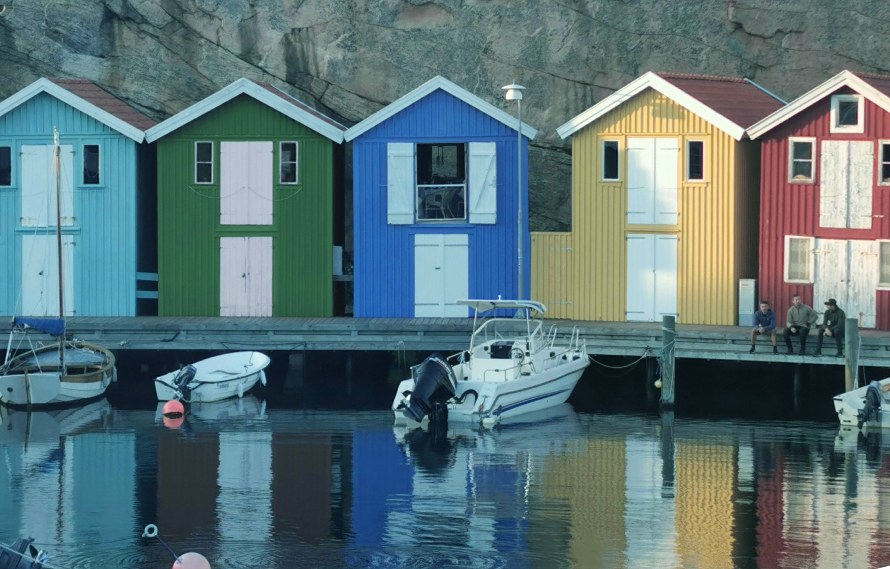
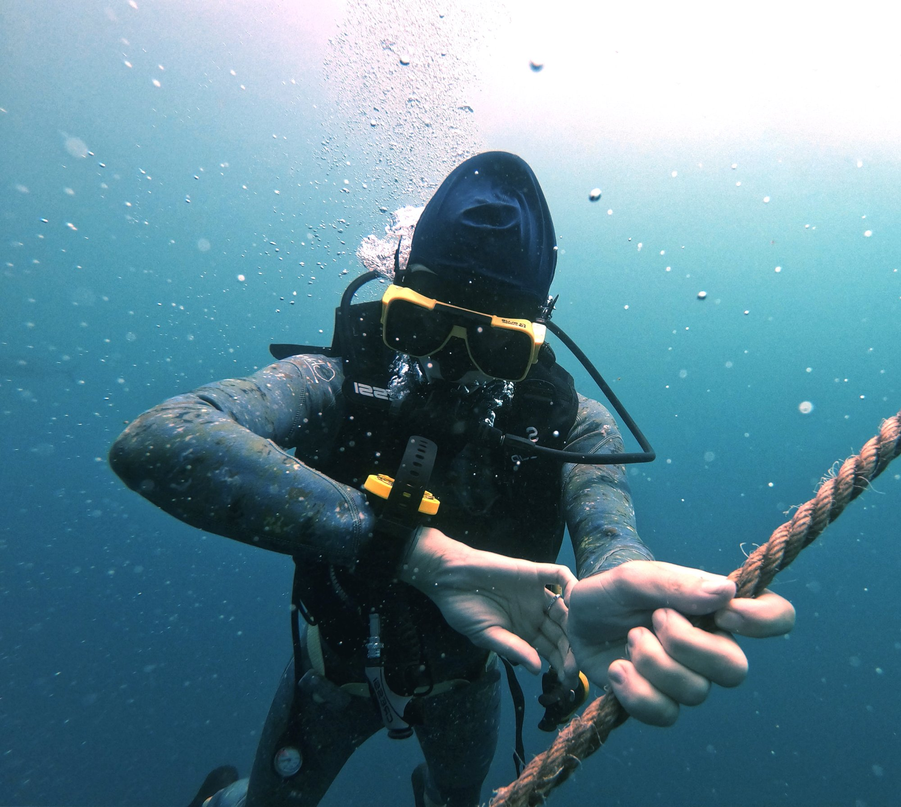

Bildredigering
Bild 1


I bild ett har jag roterat bilden för att få den rak och sedan beskurit den för att behålla samma proportioner som originalbilden. Sedan har jag ändrat färg på ett av de röda husen genom att skapa en mask på huset där jag ändrat nyansen till grön. Därefter har jag ökat mättnaden på hela bilden för att göra färgerna starkare och ändrat färgbalansen för att ge bilden en turkos/blå ton. Till sist har jag minskat bildens storlek och sänkt kvaliteten till 85% av originalet.
Bild 2

I bild två har jag tagit bort den suddiga fisken från det övre högra hörnet genom att använda kloningsverktyget och lappverktyget. Dessa verktyg användes för att ersätta fisken med delar av det omgivande vattnet. Därefter ändrade jag färgbalansen för att minska de gröna tonerna och öka de blåa. Till sist har jag minskat bildens storlek och sänkt kvaliteten till 85% av originalet.
Bild 3


I bild tre har jag färglagt delar av brandbilen genom att skapa ett rött respektive gult lager med masker där jag fyllt i de delar som ska färgläggas. För att markera delarna som skulle färgläggas har jag använt en kombination av trollspöet, som automatiskt markerar delar med liknande färg, och manuellt ritande med penseln. För att brandbilens detaljer skulle synas genom färgläggningen sänkte jag opaciteten på färgfyllningslagerna och sedan ökade jag mättnaden för att göra färgerna starkare. Därefter ändrade jag färgbalansen i hela bilden för att ge den en turkos/blå ton. Till sist minskade jag bildens storlek och sänkte kvaliteten till 85% av originalet.